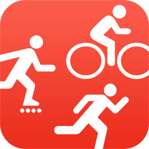
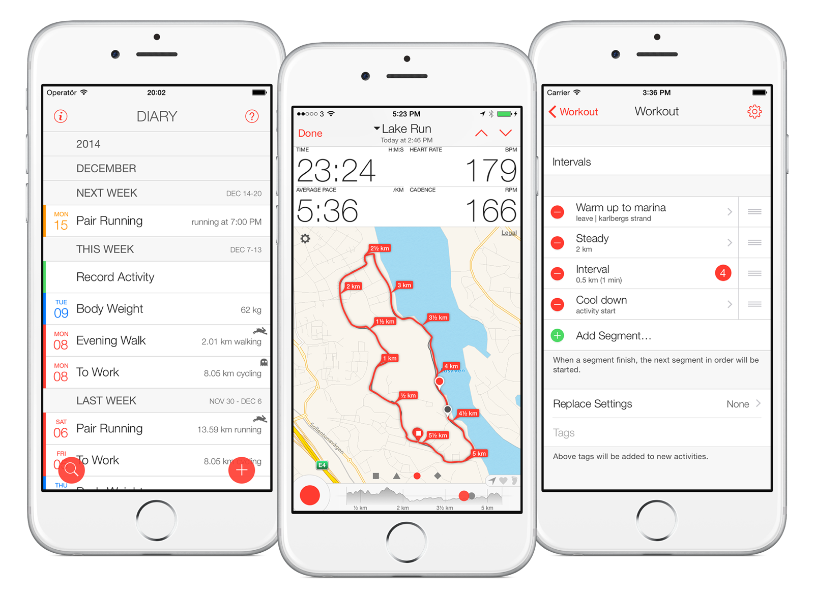

Bit of Exercise“the iPhone app that keeps you going”
Bit of Exercise strives to motivate active iPhone users to improve their training by introducing fully automated recording, flexible creation of workouts and detailed reviewing of results — all on the phone.

Whether you are running, walking or cycling, voice reports will guide you through your workout and motivate you to work harder by comparing your results with previous activities. Furthermore, your activities will automatically start recording when you leave your current location and end when you return — no need to fiddle with your phone during your workouts.
Study your progress and results in detail on your iPhone, both during and after your workout. Graphs and maps can be zoomed, and you can easily navigate to any point along your activity for further examination and comparison to your reference. A wealth of data and statistics are collected about your activities. It’s almost as if you had a personal trainer — in your iPhone.
Bit of Exercise allows you to freely assemble workouts with several segments, such as interval, multi-sport and hill training workouts. Each individual segment can be set to start and end based on various criteria such as reaching a certain location or distance. This allows you to grow in your training and get your workouts tailored to you and your surroundings.
We respect your privacy by only storing your data locally on your iPhone. No account is required nor do you have to visit a web-site to fully access your data.
“Fantastic app and believe me — I’ve tried them all. The ghost-ride function is among the best and the app has some real killer features that stands out especially if you often take the same routes. On some routes you may choose automated start/stop on passing GPS points. It also predicts your route based on previous patterns and the time of day and week. Makes regular use very easy. Use it and you’ll never regret it.” — pss-peter, App Store Review
“Using this app makes me more competitive because it compares your exercise with previous exercises so it makes me work harder. The announcements make me feel like I have a personal trainer! This is a brilliant app.” — jenbee6, App Store Review